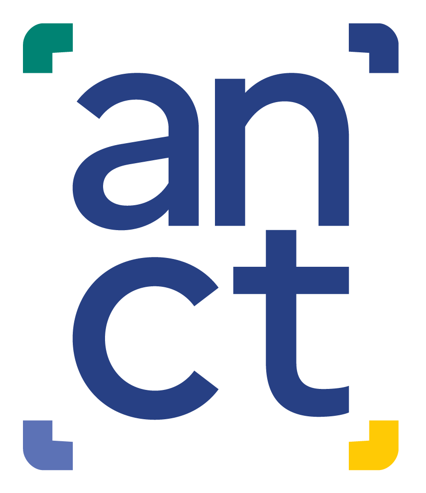

<!DOCTYPE html>
<html lang="fr" dir="ltr"></html>
<head>
  <meta charset="utf-8" />
  <link rel="shortcut icon" href="img/favicon.ico" type="image/ico"/>
  <title> Croisement des programmes de l'ANCT</title>

  <!-----CSS----->
  <!--Leaflet-->
  <link rel="stylesheet" href="lib/leaflet.css"/>

  <!--Leaflet extension-->
  <link rel="stylesheet" href="lib/leaflet-sidebar.min.css"/>
  <link rel="stylesheet" href="lib/node_modules/leaflet-search/dist/leaflet-search.min.css" />

  <!--Line-awesome (picto)-->
  <link rel="stylesheet" href= "lib/line-awesome-1.3.0/css/line-awesome.min.css">
  <!-- bootstrap -->
  <link href="lib/bootstrap-5.2.0-dist/css/bootstrap.min.css" rel="stylesheet">

  <!------JS------>
  <!--Leaflet-->
  <script src="lib/leaflet.js"></script>

  <!--Leaflet extensions-->
  <script src="lib/leaflet-sidebar.min.js"></script>
  <script src="lib/node_modules/leaflet-search/dist/leaflet-search.min.js"></script>
  <script src="lib/node_modules/leaflet.browser.print/dist/leaflet.browser.print.js"></script>
  <!-- <script src="lib/node_modules/react-leaflet-geojson-patterns/dist/"></script> -->


  <!--Bootstrap-->
  <script src="lib/jquery.min.js"></script>
  <script src="lib/bootstrap-5.2.0-dist/js/bootstrap.min.js"></script>

  <!--Style sheets-->
  <link rel="stylesheet" href="css/font.css">
  <link rel="stylesheet" href="css/style.css" defer>
</head>

<body>

  <!-- MAP-->
  <div id="IDsuperMap"></div>
  <div id="legende-active" ></div>
  

  <div id="search-container">
    <input type="text" id="search-input" placeholder="Rechercher une commune" />
  </div>


  <!--Sidebar-->
  <!-- Bloc du sidebar -->
  <div id="sidebar" class="leaflet-sidebar collapsed">
    <!--Ici: les boutons du sidebar-->
    <div class="leaflet-sidebar-tabs">
        <ul role="tablist">
          <li><a href="#home" role="tab"><i class="las la-home"></i><span class="tab-name">Accueil</span></a></li>
          <li><a href="#a-propos" role="tab"><i class="las la-info-circle"></i><span class="tab-name">À propos</span></a></li>
          <li><a href="#info" role="tab"><i class="las la-question" style="font-size: 20px;"></i><span class="tab-name">Informations utilisation</span></a></li>

        </ul>
      </div>
      <!-- Ici : le contenu du panneau latéral-->
      <div class="leaflet-sidebar-content">

        <div class="leaflet-sidebar-pane" id="home">
          
          <!--Panneau 1-->
          <div class="leaflet-sidebar-header">
            <!-- -->
            <span style="color:gray; font-weight: 500;"> Carte interactive</span>   
            <h4 style="color:#F2CB27; font-size: 20px; margin-top: 8px; font-weight: 600;">Programmes ANCT</h4>      
            <span class="leaflet-sidebar-close" @click="sidebar.close()">
              <i class="la la-step-backward"></i>
            </span>
          </div>
          
          <div class="panel-content">
            <div id="legend">
              <div id="background-tiles">
                <span class="content-titre-explication">
                  <p>Croisement des programmes et dispositifs mis en place par l'Agence Nationale de la Cohésion des territoires</p>
                </span>
                <br>
                <h1 id="title-legend-1">Fonds cartographiques</h1>
                <div class="form-check form-switch">
                  <input class="form-check-input" type="checkbox" id="fond1-checkbox" name="basemap" value="fond1" checked>
                  <label class="form-check-label" for="fond1-checkbox">OSM ©Stadia Maps</label>
                </div>
              
                <div class="form-check form-switch">
                  <input class="form-check-input" type="checkbox" id="fond2-checkbox" name="basemap" value="fond2">
                  <label class="form-check-label" for="fond2-checkbox">OSM ©Humanitarian</label>
                </div>
              </div>

              <br>

              <h1 id="title-legend-1">Programmes et dispositifs</h1>
              <span style = "font-family: Marianne, sans-serif; font-size:10px; color:#616DAF; "> <p style ="margin:0px 0px 0px 0px">Périmètres et lauréats en 2023</p></span>
              <details>
                <summary>Équipements, services et accessibilité</summary>
                  <input type="checkbox" class="program-checkbox" id="fs-marker-checkbox" data-layer-type='fs' >
                  <label style="font-family: Marianne, sans-serif; font-weight: 300;" for="fs-marker-checkbox">
                    <span style="display:inline-block; width:8px; height:8px; border-radius:50%;background-color:#616DAF; margin-left:2px; margin-right:0px;"></span>
                    France services
                  </label>
              </details>

              <details>
                <summary>Éducation, formation, emploi et économie</summary>
                  <input type="checkbox" class="program-checkbox" id="cde-marker-checkbox" data-layer-type='cde' >
                  <label style="font-family: Marianne, sans-serif; font-weight: 300;" for="cde-marker-checkbox">
                    <span style="display:inline-block; width:8px; height:8px; border-radius:50%;background-color:#E8CA1A; margin-left:2px; margin-right:0px;"></span>
                    Cités de l'emploi
                  </label>
                <br>
                  <input type="checkbox" class="program-checkbox" id="cite-marker-checkbox" data-layer-type='cite' >
                  <label style="font-family: Marianne, sans-serif; font-weight: 300;" for="cite-marker-checkbox" >
                    <span style="display:inline-block; width:8px; height:8px; border-radius:50%;background-color:#4DB2EB; margin-left:2px; margin-right:0px;"></span>
                    Cités éducatives
                  </label>
                <br>
                  <input type="checkbox" class="program-checkbox" id="ti-polygon-checkbox" data-layer-type='ti' >
                  <label style="font-family: Marianne, sans-serif; font-weight: 300;" for="ti-polygon-checkbox"> 
                    <span style="display:inline-block; width:12px; height:10px; border-radius:0; background-color:#599AD4; margin-left:2px; margin-right:0px;"></span>
                    Territoires d'industrie
                  </label>
              </details>
              

              <details>
                <summary>Villes petites et moyennes</summary>
                  <input type="checkbox" class="program-checkbox" id="acv-marker-checkbox" data-layer-type='acv' >
                  <label style="font-family: Marianne, sans-serif; font-weight: 300;" for ="acv-marker-checkbox">
                    <span style="display:inline-block; width:8px; height:8px; border-radius:50%;background-color:#E01F83; margin-left:2px; margin-right:0px;"></span>
                    Action Coeur de Ville
                  </label>
                <br>
                  <input type="checkbox" class="program-checkbox" id="acv2-marker-checkbox" data-layer-type='acv2' >
                  <label style="font-family: Marianne, sans-serif; font-weight: 300;" for ="acv2-marker-checkbox">
                    <span style="display:inline-block; width:8px; height:8px; border-radius:50%;background-color:#313778; margin-left:2px; margin-right:0px;"></span>
                    Entrées de ville
                  </label>
                <br>
                  <input type="checkbox" class="program-checkbox" id="pvd-marker-checkbox" data-layer-type='pvd'>
                  <label style="font-family: Marianne, sans-serif; font-weight: 300;" for ="pvd-marker-checkbox">
                    <span style="display:inline-block; width:8px; height:8px; border-radius:50%;background-color:#DA7E42; margin-left:2px; margin-right:0px;"></span>
                    Petites villes de demain
                  </label>
                <br>
                  <input type="checkbox" class="program-checkbox" id="va-marker-checkbox" data-layer-type='va'>
                  <label style="font-family: Marianne, sans-serif; font-weight: 300;" for ="va-marker-checkbox">
                    <span style="display:inline-block; width:8px; height:8px; border-radius:50%;background-color:#A4173A; margin-left:2px; margin-right:0px;"></span>
                    Villages d'avenir
                  </label>
              </details>

              <details>
                <summary>Numérique</summary>
                  <input type="checkbox" class="program-checkbox" id="fabt-marker-checkbox" data-layer-type='fabt' >
                  <label style="font-family: Marianne, sans-serif; font-weight: 300;" for="fabt-marker-checkbox">
                    <span style="display:inline-block; width:8px; height:8px; border-radius:50%;background-color:#793186; margin-left:2px; margin-right:0px;"></span>
                    Fabriques de territoires
                  </label>
                  <br>
                  <input type="checkbox" class="program-checkbox" id="manuprox-marker-checkbox" data-layer-type='manuprox' >
                  <label style="font-family: Marianne, sans-serif; font-weight: 300;" for="manuprox-marker-checkbox">
                    <span style="display:inline-block; width:8px; height:8px; border-radius:50%;background-color:#05b497; margin-left:2px; margin-right:0px;"></span>
                    Manufactures de proximité
                  </label>
              </details>

              <details>
                <summary>Transition écologique</summary>
                <input type="checkbox" class="program-checkbox" id="crte-polygon-checkbox" data-layer-type='crte' >
                <label style="font-family: Marianne, sans-serif; font-weight: 300;" for="crte-polygon-checkbox">
                  <span style="display:inline-block; width:12px; height:10px; border-radius:0; background-color:#719971; margin-left:2px; margin-right:0px;"></span>
                  CRTE signés
                </label>
                <br>
                <input type="checkbox" class="program-checkbox" id="ami-polygon-checkbox" data-layer-type='ami' >
                <label style="font-family: Marianne, sans-serif; font-weight: 300;" for="ami-polygon-checkbox">
                  <span style="display:inline-block; width:12px; height:10px; border-radius:0; background-color:#427A6F; margin-left:2px; margin-right:0px;"></span>
                  Avenir Montagne Ingénierie
                </label>
                <br>
                <input type="checkbox" class="program-checkbox" id="amm-polygon-checkbox" data-layer-type='amm' >
                <label style="font-family: Marianne, sans-serif; font-weight: 300;" for="amm-polygon-checkbox"> 
                  <span style="display:inline-block; width:12px; height:10px; border-radius:0; background-color:#6D4E47; margin-left:2px; margin-right:0px;"></span>
                  Avenir Montagne Mobilité
                </label>
              </details>
              
              <details>
                <summary>Ingénierie</summary>
                <input type="checkbox" class="program-checkbox" id="fabp-polygon-checkbox" data-layer-type='fabp' >
                <label style="font-family: Marianne, sans-serif; font-weight: 300;" for="fabp-polygon-checkbox">
                  <span style="display:inline-block; width:12px; height:10px; border-radius:0; background-color:#FF7D00; margin-left:2px; margin-right:0px;"></span>
                  Fabriques prospectives
                </label>
                <br>
                <input type="checkbox" class="program-checkbox" id="pao-marker-checkbox" data-layer-type='pao' >
                <label style="font-family: Marianne, sans-serif; font-weight: 300;" for="pao-marker-checkbox">
                  <span style="display:inline-block; width:12px; height:10px; border-radius:0; background-color:#38853c; margin-left:2px; margin-right:0px;"></span>
                  Projet et appui opértionnel
                </label>
              </details>


              <details>
                <summary>Commerce</summary>
                <input type="checkbox" class="program-checkbox" id="frla-marker-checkbox" data-layer-type='frla' >
                <label style="font-family: Marianne, sans-serif; font-weight: 300;" for="frla-marker-checkbox">
                  <span style="display:inline-block; width:12px; height:10px; border-radius:0; background-color:#363636; margin-left:2px; margin-right:0px;"></span>
                  Fonds de restructuration des locaux d'activité
                </label>
              </details>

              <button id="clear-legend-button"><i class="las la-trash-alt"></i> Effacer</button>
              
              
              <div class="info-notice" >
                <span style="display: inline-flex; align-items: center;font-family: Marianne, sans-serif; font-size:10px; color:gray;">
                  <i class="las la-exclamation-circle" style="color: #1f456e; font-size: 28px; margin-right: 5px;padding: 4px; border-radius: 50%;"></i>
                  <p >Les données sont au COG 2023. <br>Les données ponctuelles ont été agrégées à l'échelle communale.</p>
                </span>
              </div>
              <br>

              <span class="text-info-home">
                <div class="highlighted-link" onclick="window.location.href='https://www.data.gouv.fr/fr/organizations/agence-nationale-de-la-cohesion-des-territoires/#/presentation'">
                  <i class="las la-server" style="font-size: 24px;"></i> Télécharger les données
                </div> 
                <br>
                <div class="highlighted-link" onclick="window.location.href='https://cartotheque.anct.gouv.fr/cartes'">
                  <i class="las la-map" style="font-size: 24px;"></i> Visualiser et télécharger les cartes
                </div>
              </span>

            </div> 
            
            
            <!--Ajouter fiche explicative popup des dispositifs-->
            <div id="card-sidebar">

              <div id= "card">
                              
                <div class="card-header" ></div>

                <div class="card-body"></div>

              </div>

              <button id="bnt-retour" ><i class="las la-arrow-left"></i> Retour </button>
              
            </div>

          </div>
        </div>

      
      <!--Panneau 2-->
        <div class="leaflet-sidebar-pane" id="a-propos">
          <div class="leaflet-sidebar-header">
            <span style="color:gray; font-weight: 500;"> À propos</span>   
            <h4 style="color:#F2CB27; font-size: 20px; margin-top: 8px; font-weight: 600;">Programmes ANCT</h4> 
            <span class="leaflet-sidebar-close" @click="sidebar.close()">
              <i class="la la-step-backward"></i>
            </span>
          </div>
          <div class="panel-content" style="margin-right: 15px;">
            <a href="https://agence-cohesion-territoires.gouv.fr/" target="_blank">
              
            </a>

            <span class="apropos-text-anct">
              <p>Agence de l’État créée en 2020, l’Agence nationale de la cohésion des territoires (ANCT) assure un rôle de « fabrique à projets » pour permettre aux collectivités de mener à bien leurs projets ; facilite l’accès des collectivités locales aux ressources nécessaires pour les concrétiser (ingénierie technique et financière, partenariats, subventions…) ; prend en compte les différences entre les territoires et adapte son action à leurs besoins.</p>
            </span>

            <span class="apropos-liens-programmes">
              <p>
                <b>En savoir plus sur les programmes :</b>
                <br>
                <a href="https://agence-cohesion-territoires.gouv.fr/france-services-36" target="_blank">France services</a>
                <br>
                <a href="https://agence-cohesion-territoires.gouv.fr/cites-de-lemploi-571" target="_blank">Cités de l'emploi</a>
                <br>
                <a href="https://agence-cohesion-territoires.gouv.fr/cites-educatives-76" target="_blank">Cités éducatives</a>
                <br>
                <a href="https://agence-cohesion-territoires.gouv.fr/action-coeur-de-ville-42" target="_blank">Action Coeur de ville</a>
                <br>
                <a href="https://agence-cohesion-territoires.gouv.fr/guide-entrees-de-ville-1226" target="_blank">Entrées de ville</a>
                <br>
                <a href="https://agence-cohesion-territoires.gouv.fr/petites-villes-de-demain-45" target="_blank">Petites Villes de demain</a>
                <br>
                <a href="https://agence-cohesion-territoires.gouv.fr/villages-davenir-1e-vague-laureats-2024-1299" target="_blank">Villages d'avenir</a>
                <br>
                <a href="https://agence-cohesion-territoires.gouv.fr/fabriques-de-territoire-582" target="_blank">Fabriques de territoires</a>
                <br>
                <a href="https://agence-cohesion-territoires.gouv.fr/territoires-dindustrie-44" target="_blank">Territoires d'industrie</a>
                <br>
                <a href="https://agence-cohesion-territoires.gouv.fr/le-crte-un-contrat-au-service-des-territoires-et-de-la-mise-en-oeuvre-de-la-planification" target="_blank">Contrats pour la réussite de la transition écologique</a>
                <br>
                <a href="https://agence-cohesion-territoires.gouv.fr/avenir-montagnes-ingenierie" target="_blank">Avenir Montagne Ingénierie</a>
                <br>
                <a href="https://agence-cohesion-territoires.gouv.fr/avenir-montagnes-mobilites-629" target="_blank">Avenir Montagne Mobilité</a>
                <br>
                <a href="https://agence-cohesion-territoires.gouv.fr/les-fabriques-prospectives-accompagner-les-territoires-dans-les-transitions-211" target="_blank">Fabriques prospectives</a>
              </p>
            </span>

            <span class="apropos-lien_outil">
              <p>
                <b>En savoir plus sur les territoires : </b>
                <br>
                <a href="https://www.observatoire-des-territoires.gouv.fr/" target="_blank">L'Observatoire des Territoires</a>
                <br>
                <a href="http://www.onpv.fr/presentation" target="_blank">L'Observatoire National de la Politique de la Ville</a>
                <br>
                <a href="https://sig.ville.gouv.fr/" target="_blank">Le SIG Ville</a>
              </p>
            </span>

            <span class="apropos-realisation"><b>Réalisation :</b>
              <p>Pôle analyse & diagnostics territoriaux - Cartographie - ANCT </p>            
              <p>Pour toutes questions, veuillez contacter :
                <a href="cartographie@anct.gouv.fr" target="_blank">cartographie@anct.gouv.fr</a>
              </p>
            </span>
            <br>
            <span class="apropos-technologie"><b>Technologies :</b>
              <p>Leaflet 1.9.4, Bootstrap 5.2, Line-awesome 1.3.0</p>
              <p>
                Le code source de cet outil est consultable sur 
                <a href="https://github.com/anct-carto/superposeur-anct" target="_blank">Github</a>
                .
              </p>
            </span>


          </div>
        </div>

              <!--Panneau 3-->
              <div class="leaflet-sidebar-pane" id="info">
                <div class="leaflet-sidebar-header" style="margin-bottom: 30px;">
                  <span style="color:gray; font-weight: 500;"> Guide utilisation</span>   
                  <!-- <h4 style="color:#F2CB27; font-size: 20px; margin-top: 8px; margin-bottom: 30px; font-weight: 600;">Programmes ANCT</h4>  -->
                  <span class="leaflet-sidebar-close" @click="sidebar.close()">
                    <i class="la la-step-backward"></i>
                  </span>
                </div>
                <div class="panel-content">

                  <div id="conseil-utilisation">
                    <span id="aide-recherche">
                      <h1><i class="las la-search" style="font-size:16px"></i>Barre de cherche par département</h1>
                      <p>Une recherche par département est rendu possible grâce à l'icon "Loupe". Il suffit de renseigner le nom du département souhaité afin de zoomer sur ce dernier et ainsi, découvrir quels programmes et dispositifs ANCT existent sur le territoire.</p>
                    </span>
                    <span id="aide-print">
                      <h1><i class="las la-print" style="font-size:16px"></i> Exporter ou imprimer</h1>
                      <p>Un export au format PDF ou une impression est rendu possible grâce à l'icon "impriante". Il suffit de séléctionner le type d'export souhaité: <br>- en A4 portrait ("Portrait") <br>- A4 paysage ("Landscape") <br>- en A4 customisé ("Custom"). </p>
                      <p><i class="las la-exclamation-triangle" style="font-size:16px" ></i> Ces exports sont des cartes de travail et ne pourront pas être publiées.</p>
                    </span>
                    
                  </div>
 
      
                </div>
              </div>


      </div>
  </div>
  

  <!--Lecture script js-->
  <script src="src/app.js"></script>
</body>
</html>